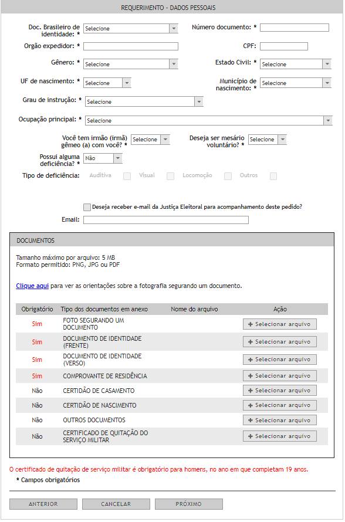

Como tirar o título de eleitor pela internet?
OBS: Para realizar a emissão do título de eleitor é preciso dos seguintes documentos:
- Comprovante de residência atualizado
- Documento de identificação oficial com foto
- Certificado de quitação militar


1° passo:Antes da solicitação
1.1 Verifique se possui algum débito com a justiça Eleitoral relativo a ausências injustificadas às urnas ou aos trabalhos durante as eleições no sistema de consulta de débitos.
1.2 Prepare a documentação que será anexada à solicitação.
1.3 Faça uma selfie segurando, ao lado de sua face, o documento oficial de identificação. Não devem ser utilizados qualquer adereço, vestimenta ou aparato que bloqueie a completa visão da face, como óculos, bonés, gorros, entre outros.
1.4 Digitalize ou tire fotos dos documentos, de forma que estejam legíveis.
OBS:O tamanho maximo por arquivo é de 10 MB, além de os formatos permitidos serem PNG,PDF,JPG exclusivamente.
2° passo: Durante o preechimento da solicitção
2.1 Acesse o Autoatendimento Eleitoral - Título Net e selecione a UF para Autoatendimento, após isso clique em próximo até chegar na tela "identificação".
2.2 Na tela "identificação" - Campo "Título eleitoral", selecione a opção "NÃO TENHO" apenas se nunca tiver tirado o título. Preencha o formulario de acordo com suas informações. Os nomes devem ser completos.
2.3 Preecha o formulario de acordo com suas informaçãoes e anexe os arquivos.
OBS:Há a possibilidade de o sistema avisar se há necessidade de comparecimento ao cartório para conclusão presencial do atendimento.
3° passo: Após o envio da solicitação
3.1 Após preencher o formulário de solicitação e adicionar a documentação necessária, o sistema vai informar um número de protocolo para acompanhar a análise pela Zona Eleitoral. Anote o número ou imprima a tela que for mostrada. Acesse o Autoatendimento Eleitoral - Título Net e selecione o botão “Atendimento ao eleitor”. Em seguida, selecione “Acompanhe uma solicitação” e Preencha os campos.
3.2 As solicitações de alistamento (primeiro título), transferência e revisão dos dados formulados por meio do Autoatendimento Eleitoral – Título Net devem, em regra, ser apreciados, decididos e enviados, no prazo máximo de 5 (cinco) dias úteis, para processamento ou, se for o caso, colocados em diligência pela zona eleitoral responsável.
3.3 Após o envio pela Zona Eleitoral, o Tribunal Superior Eleitoral providenciará o processamento da solicitação em prazo não superior a 3 (três) dias úteis, em regra. Somente após esse processamento será possível acessar o título pelo Portal do TSE ou pelo aplicativo e-Título com os dados atualizados.
3.4 Aguarde a conclusão da análise da solicitação pela Zona Eleitoral responsável antes de solicitar novamente o alistamento (primeiro título), a transferência de domicílio eleitoral ou a revisão nos dados.
4° passo: Como obter o título após o processamento
Se você já é eleitor ou eleitora, o título eleitoral pode ser impresso pelo sistema Autoatendimento Eleitoral - Título Net, na Zona Eleitoral ou por meio do aplicativo e-Título, que também disponibiliza a via digital do documento. Se você está com o título regular ou suspenso, pode acessar o aplicativo.